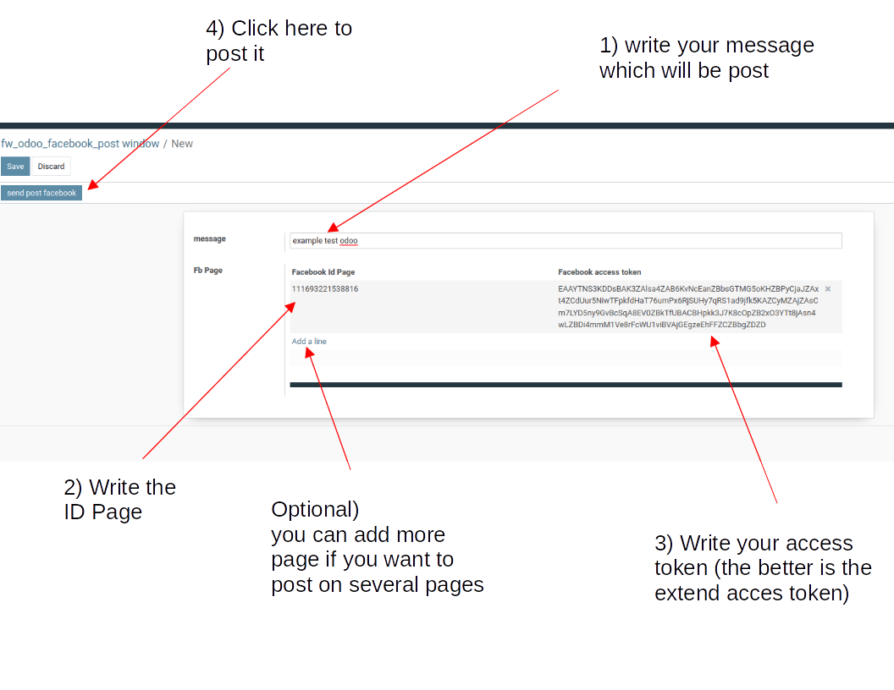

Before using this modules, you must be administrator in the page you want to post on facebook!
Then their are few step to use this modules :
- First : create an apps on Facebook for developers
- Second : connect your apps to your account
- Third : try your apps
- Four : Post on Facebook from odoo
First :
- go create your apps
- connect you on Facebook for developers by clicking on this link
- login with your email address and password of your account
- you will arrive on a page like that (without apps for you if you never been here before)
- so click on create an app
- you will arrive on this page
- choose business type
- it will ask a name for your app and your mail contact
- usually it will ask your password account
- then you have created your apps
Second :
- now click on Tools in the top
- and click on Graph API Explorer
- you will arrive here
- click on "Get the token" : choose "Obtain a Page acces token"
- then it will open a new window for choosing your account
- next it ask which page where you are the administrator (you can choose several pages)
- next you arrive on another page without importance click on done
- then you have associated your apps to facebook
Third :
- Now you have another category on the right side :
- you can see that their are automatically three permissions : public_profile, pages_show_list and pages_read_engagement
- click on "add permission" : "choose pages_manage_posts"
- that's the only permissions we need (you can add others if you want)
- go on facebook an go on your page where you want to put your post
- click on more and choos "in regards to"
- go to the bottom of the page
- you will see your ID PAGE, copy it
- go back on Graph API Explorer
- test if your apps works
- then click on "send"
- if you have the same message "id" : "......" means that your message has been send, else it will appear an error message
- go on your Facebook Page
- So you see that your apps worked
- the problem is that the Access token did not last long, so you must extend it
- copy your Access token
- now click on Tools in the top
- and click on Access token debugger
- another time they will ask your password
- an then you have a new Access token with the expires date
Four :
- it's almost over
- go on odoo
- go on your Facebook Post module
- click on create

- so you can add or a message or an iamge or both
- for the moment you can only send message from internet (begin by "https")
- you must inform the ID Page and the Access_token
- then after clicking on "post on facebook", you can see the post on all the page you choose